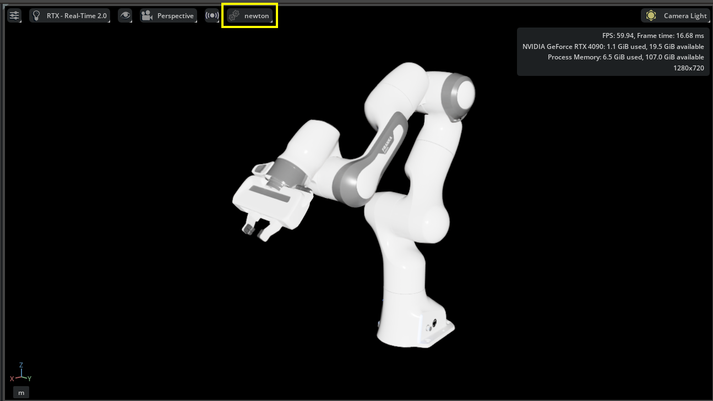

Newton Physics Backend#
Isaac Sim supports multiple physics backends. In addition to the default PhysX SDK backend, you can now use Newton as the simulation backend.
Newton is a GPU-accelerated, extensible, and differentiable physics simulation engine designed for robotics and research. Built on NVIDIA Warp and integrating MuJoCo Warp, Newton provides high-performance simulation with multiple solver implementations, including XPBD, MuJoCo, Featherstone, and SemiImplicit. Newton is an open-source project maintained by Disney Research, Google DeepMind, and NVIDIA.
Overview#
Isaac Sim integrates Newton through three key extensions:
isaacsim.physics.newton: The Newton physics backend implementation that:
Parses the USD stage and builds Newton simulation objects
Synchronizes simulation state with Fabric for rendering and data access
Provides a tensor-based API (
isaacsim.physics.newton.tensors) compatible with NumPy, PyTorch, and WarpRegisters Newton with the unified physics interface
isaacsim.core.simulation_manager:
SimulationManagerprovides functionality for switching between physics engines at runtime, along with scene configuration classes (PhysicsScene,NewtonMjcScene) for Newton-specific settings.isaacsim.core.experimental.prims: Uses
isaacsim.physics.newton.tensorsas its tensor backend when Newton is active. This extension provides engine-agnostic prim wrappers that work consistently across all physics backends.
When Newton is active, it replaces PhysX as the simulation backend while maintaining compatibility with standard USD Physics schemas used by your robot and environment assets.
Using the Experimental Core API#
The isaacsim.core.experimental extension provides engine-agnostic building blocks that ensure compatibility across different physics backends. User extensions and applications are highly recommended to use isaacsim.core.experimental to write simulation code that works with all physics backends (PhysX, Newton). Refer to Core Experimental API documentation for more details.
Launching Isaac Sim with Newton#
You can launch Isaac Sim with Newton as the default physics backend using the dedicated application file.
./isaac-sim.newton.sh
isaac-sim.newton.bat
When launched with this application, Newton is automatically enabled and PhysX is disabled.
Switching Physics Engines at Runtime#
You can switch between physics engines programmatically using the SimulationManager class. Use get_available_physics_engines() to list registered engines and switch_physics_engine() to activate Newton:
from isaacsim.core.simulation_manager import SimulationManager
engines = SimulationManager.get_available_physics_engines(verbose=True)
success = SimulationManager.switch_physics_engine("newton")
if success:
print("Switched to Newton physics engine")
Note
Switching physics engines should be done before starting the simulation. The switch deactivates the previous engine and activates the new one.
Currently, only one physics engine can be active at a time.
When running standalone scripts via python.sh, enable isaacsim.physics.newton and isaacsim.physics.newton.tensors manually before switching, as these are not loaded automatically outside of isaac-sim.newton.sh.
Basic Usage Example#
The following example demonstrates setting up a simple physics scene with Newton:
import omni.kit.actions.core
import omni.timeline
import omni.usd
from isaacsim.core.experimental.objects import Cube, Plane
from isaacsim.core.simulation_manager import SimulationManager
from isaacsim.core.simulation_manager.impl.mjc_scene import NewtonMjcScene
from pxr import Sdf, UsdGeom, UsdLux, UsdPhysics
omni.usd.get_context().new_stage()
SimulationManager.switch_physics_engine("newton")
stage = omni.usd.get_context().get_stage()
# Enable camera light and add distant light
action_registry = omni.kit.actions.core.get_action_registry()
action_registry.get_action("omni.kit.viewport.menubar.lighting", "set_lighting_mode_camera").execute()
UsdLux.DistantLight.Define(stage, Sdf.Path("/DistantLight")).CreateIntensityAttr(500)
# Create physics scene
mjc_scene = NewtonMjcScene("/World/PhysicsScene")
mjc_scene.set_gravity((0.0, 0.0, -9.81))
# Create ground plane (collision + visual)
UsdGeom.Xform.Define(stage, "/World/GroundPlane")
Plane("/World/GroundPlane/CollisionPlane", axes="Z")
UsdPhysics.CollisionAPI.Apply(stage.GetPrimAtPath("/World/GroundPlane/CollisionPlane"))
visual_mesh = UsdGeom.Mesh.Define(stage, "/World/GroundPlane/VisualMesh")
size = 50.0
visual_mesh.CreatePointsAttr([(-size, -size, 0), (size, -size, 0), (size, size, 0), (-size, size, 0)])
visual_mesh.CreateFaceVertexCountsAttr([4])
visual_mesh.CreateFaceVertexIndicesAttr([0, 1, 2, 3])
visual_mesh.CreateDisplayColorAttr([(0.5, 0.5, 0.5)])
# Create dynamic cube
Cube("/World/Cube", sizes=0.5, positions=[[0.0, 0.0, 2.0]])
cube_prim = stage.GetPrimAtPath("/World/Cube")
UsdPhysics.CollisionAPI.Apply(cube_prim)
UsdPhysics.RigidBodyAPI.Apply(cube_prim)
# Start simulation
timeline = omni.timeline.get_timeline_interface()
timeline.play()
Scene Configuration#
Newton USD Schemas#
Newton uses custom USD schemas to configure physics scenes. The Newton USD Schemas project provides extensions to OpenUSD’s UsdPhysics specification, allowing USD layers to fully specify Newton runtime parameters. These schemas follow a minimalist approach, capturing parameters that generalize across simulators and have clear physical meaning.
The key schemas include:
NewtonSceneAPI: Base Newton schema applied to all physics scenes, providing common attributes like timestep (
newton:timeStepsPerSecond), gravity settings, and solver iterations.MjcSceneAPI: MuJoCo solver-specific schema with integrator type, constraint solver algorithm, tolerance, and contact settings.
PhysicsScene Base Class#
The PhysicsScene class provides a Python interface to the NewtonSceneAPI schema attributes. When you create a PhysicsScene, it automatically applies the NewtonSceneAPI to the underlying USD prim, allowing you to configure common Newton settings:
from isaacsim.core.simulation_manager import PhysicsScene
physics_scene = PhysicsScene("/World/PhysicsScene")
physics_scene.set_gravity((0.0, 0.0, -9.81))
physics_scene.set_dt(0.001)
physics_scene.set_enabled_gravity(True)
physics_scene.set_max_solver_iterations(100)
MuJoCo Solver Configuration#
MuJoCo-specific parameters can be stored in USD through the MJC USD schemas, which capture settings for scenes, bodies, joints, and other elements. The MjcSceneAPI is one of these schemas, providing scene-level simulation parameters. The NewtonMjcScene class provides a Python interface to the MjcSceneAPI attributes, allowing you to configure MuJoCo solver settings directly on USD Physics Scene prims.
When you create a NewtonMjcScene, it applies both NewtonSceneAPI and MjcSceneAPI to the prim:
from isaacsim.core.simulation_manager.impl.mjc_scene import NewtonMjcScene
mjc_scene = NewtonMjcScene("/World/PhysicsScene")
mjc_scene.set_dt(0.002)
mjc_scene.set_integrator("implicit") # euler, rk4, implicit, implicitfast
mjc_scene.set_solver("newton") # pgs, cg, newton
mjc_scene.set_iterations(100)
mjc_scene.set_tolerance(1e-8)
mjc_scene.set_cone("elliptic") # pyramidal, elliptic
Note
Additional engine-specific scene classes to incorporate other solver-specific schemas (XPBD, Featherstone) are under development and will be available in future releases.
Robot Simulation Example#
The following example loads a Franka robot and simulates it with Newton:
import omni.kit.actions.core
import omni.timeline
import omni.usd
from isaacsim.core.simulation_manager import SimulationManager
from isaacsim.core.simulation_manager.impl.mjc_scene import NewtonMjcScene
from isaacsim.core.utils.stage import add_reference_to_stage
from isaacsim.storage.native import get_assets_root_path
from pxr import Sdf, UsdLux
omni.usd.get_context().new_stage()
SimulationManager.switch_physics_engine("newton")
stage = omni.usd.get_context().get_stage()
action_registry = omni.kit.actions.core.get_action_registry()
action_registry.get_action("omni.kit.viewport.menubar.lighting", "set_lighting_mode_camera").execute()
UsdLux.DistantLight.Define(stage, Sdf.Path("/DistantLight")).CreateIntensityAttr(500)
mjc_scene = NewtonMjcScene("/World/PhysicsScene")
mjc_scene.set_dt(0.002)
mjc_scene.set_integrator("implicit")
mjc_scene.set_gravity((0.0, 0.0, -9.81))
asset_path = get_assets_root_path() + "/Isaac/Robots/FrankaRobotics/FrankaPanda/franka.usd"
add_reference_to_stage(usd_path=asset_path, prim_path="/World/Franka")
timeline = omni.timeline.get_timeline_interface()
timeline.play()
{kind=link}

The physics engine selector in the viewport menu.#
For more on the physics umbrella UI (engine selector, scene settings, and related controls), see the Omni Physics UI documentation.
To compare simulation results between Newton and PhysX:
stop the simulation
switch the physics engine from “newton” to “physx” using the menu shown above
play the simulation again
Asset Compatibility#
Not all existing PhysX-based assets in Isaac Sim are compatible with Newton. These assets are tuned for PhysX and may not produce optimal results with Newton/MuJoCo out of the box. You may need to adjust physics parameters (contact settings, solver iterations, timestep) to achieve the desired simulation behavior.
The following Newton/MuJoCo constraints may prevent assets from loading or simulating correctly:
Reversed joint direction: Newton requires that
physics:body0is the parent body andphysics:body1is the child body on every joint prim. Assets authored for PhysX often have these swapped. Newton reports “Reversed joints are not supported” and does not start. Fix by swappingphysics:body0andphysics:body1on the affected joint prims, or re-export the asset from a URDF/MJCF importer that targets Newton.Closed kinematic chains: Newton does not support loop (closed-chain) joints. Robots with parallel linkage mechanisms will fail with “Joint graph contains a cycle”. These assets require breaking the loop at one joint or will need to wait for closed-chain support in a future release.
Minimum body mass and inertia: Newton’s solver enforces a minimum mass and inertia for all dynamic bodies. Links with near-zero or unset mass will cause initialization to fail with “mass and inertia of moving bodies must be larger than mjMINVAL”. Ensure all rigid bodies have non-zero mass and inertia properties set (see Asset Validation), or mark the affected links as kinematic.
Zero-size collision shapes: Newton requires all collision geometry to have non-zero dimensions. A box, sphere, or capsule shape with any zero half-extent, often used as a placeholder in PhysX assets, triggers “Only plane shapes are allowed to have a size of zero”. Replace zero-size shapes with properly sized geometry or remove them.
Joints outside articulation roots: All joints must belong to an articulation (a prim with
UsdPhysics.ArticulationRootAPI). Joints that exist outside any articulation root, which PhysX can simulate as free joints, cause Newton to report “Found N joint(s) not belonging to any articulation” and fail initialization.USD stage composition errors: Newton’s stage parser is stricter than PhysX about USD composition validity. Stages with unresolved reference prims, missing payloads, or sublayer cycles that PhysX silently ignores will fail Newton initialization with “USD stage has composition errors”. Resolve all composition errors (visible in the USD Composer stage panel) before switching to Newton.
Negative scale transforms: Newton’s USD import pipeline does not correctly handle negative scale transforms on collision shapes, leading to incorrect geometry and simulation artifacts, often surfacing as a misleading “The model must have at least one joint” error rather than a message about the scale. PhysX handles negative scale by mirroring collision geometry; Newton does not. Avoid negative scale transforms on collision shapes and use explicitly mirrored meshes instead. This is a known issue being worked on for a future Newton release.
Scenes without joints: Newton’s MuJoCo solver currently requires at least one joint in the model. A rigid body with no collision geometry and no explicitly authored mass has zero mass from Newton’s perspective; zero-mass bodies are skipped when Newton assigns free joints to floating bodies, leaving no joints in the model and failing with “The model must have at least one joint to be able to convert it to MuJoCo”. As a workaround, add collision geometry to the rigid body or explicitly author a mass via
UsdPhysics.MassAPI. This is a known parser limitation being addressed so that free rigid bodies are handled automatically in a future release.Contact count limit: The MuJoCo Warp solver pre-allocates a fixed contact buffer (
nconmax, default 200). Scenes that generate more simultaneous contacts than this limit will drop the excess contacts each step, producing incorrect simulation results. If you see “Number of Newton contacts (N) exceeded MJWarp limit” printed to stdout, increasenconmaxvia the Newton stage solver config before simulation starts:import isaacsim.physics.newton as newton_ext ns = newton_ext.acquire_stage() if ns is not None: ns.cfg.solver_cfg.nconmax = 1000
With the new asset structure and MJCF/URDF importers, we are working toward converting each asset to both PhysX schemas and MJC USD schemas. This will enable consistent simulation behavior between the original MJCF asset (using MuJoCo) and the converted MJC USD asset (using Newton).
Note
Newton integration in Isaac Sim is experimental. The API and features may change in future releases. Many Isaac Sim features and workflows that do not use the experimental core API are not yet supported with the Newton backend; support is being actively developed for the next release. The Newton backend in Isaac Sim has been tested only with a limited set of robots, including G1, H1, T1, UR5e, Wonik Allegro, and Shadow Hand.
Additional Resources#
Omni Physics UI documentation (physics umbrella UI, engine selector, scene settings)